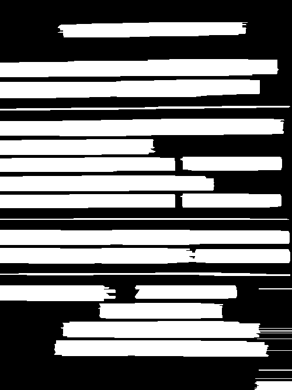

TextDetectionUsingProfile lines and blocks by projection
Count the ink in every row and every column of a receipt, and cut where the count drops.
1
Binarise
Otsu threshold, inverted, so the text is white (
cvThreshold).2
Rows
White pixels per row. A line starts above 10, ends below 10, and is kept if it is taller than 10. All 14 lines are found.
3
Blocks
For each line: widen the strokes (dilate 3 × 1, four times), count per column, split at gaps and merge blocks closer than 5 px.
4
Draw
Every block goes to
cvDrawRect on the colour image.
14 rows blocks

Blocks melt together: each line's block search dilates the whole shared image again, so the first six lines get one almost full-width block each and the last eight none.
Boxes on the top edge:
cvDrawRect(src, rect.x, rect.y, …) passes two numbers where two corners belong. They become (x, 0) and (y, 0), so every box is a line along the top pixel row.